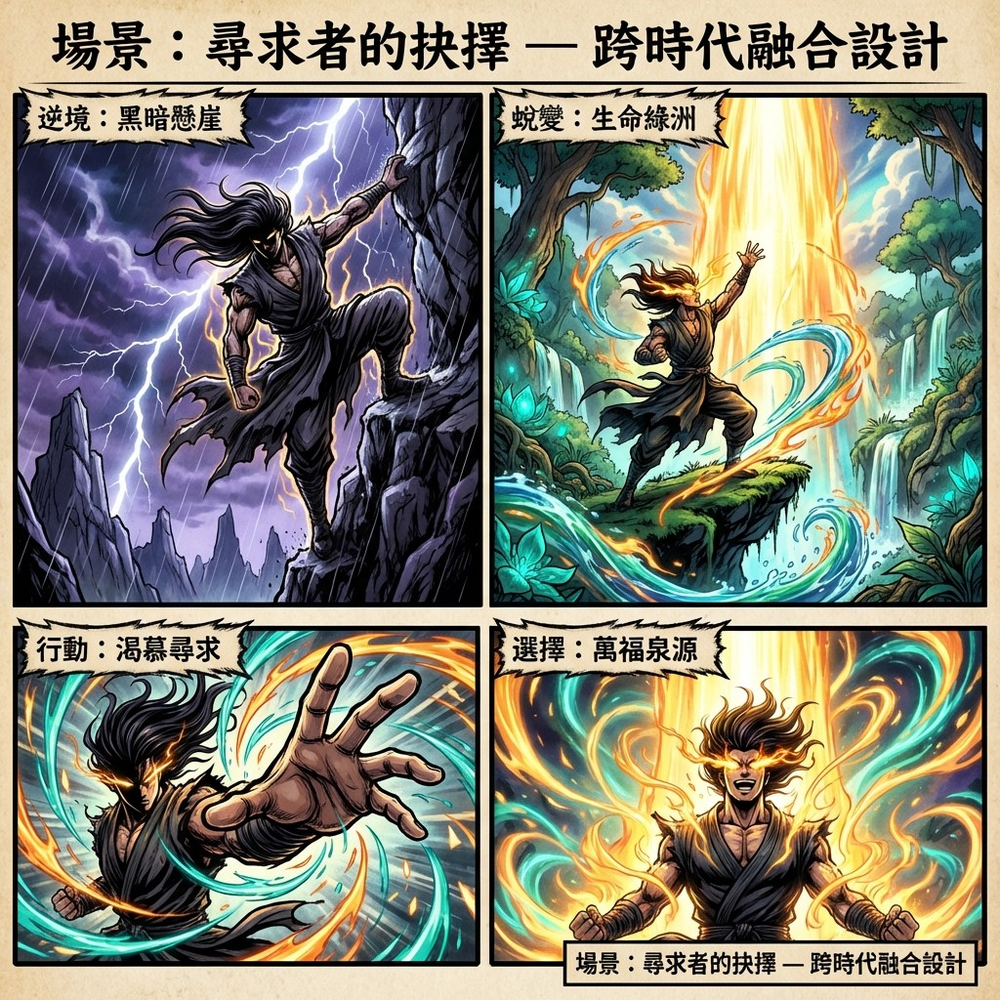
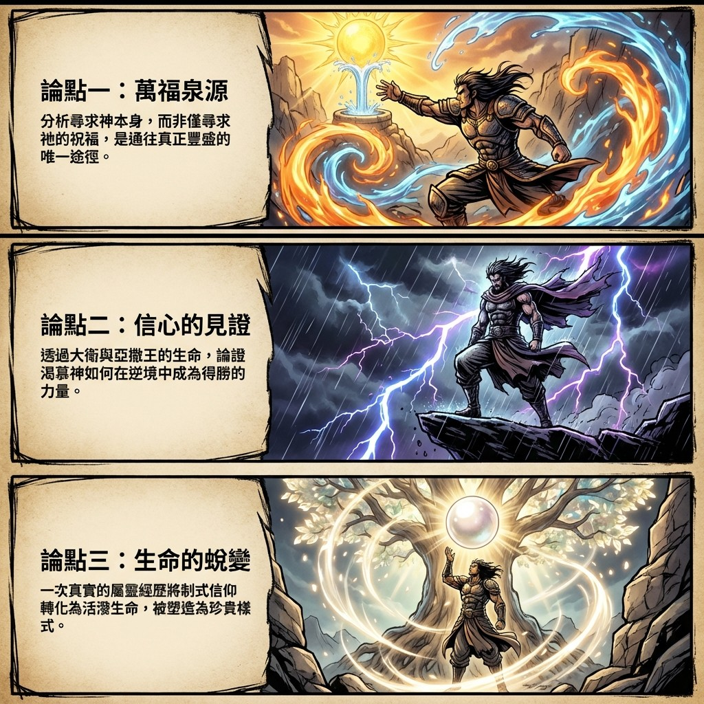

1. 導言：主題、總結與核心要訣
在我們屬靈的旅程中，「渴慕神」不僅是一種短暫的情感悸動，更是一項能徹底改變生命軌跡的深刻操練。它超越了對平安、健康或家庭幸福的祈求，直指一切祝福的源頭——那位創造天地、樂意賜福的上帝。本文旨在深入探討這份渴慕的真實意義，我們將結合聖經中君王們的生命見證、一段觸動人心的個人故事，以及發人深省的神學比喻，為每一位渴望信仰進深的讀者，擘畫一條從表層的習慣走向內在豐盛的清晰道路。
本文的核心論點在於：真正的屬靈豐盛，源於將我們尋求的焦點從「神的祝福」轉向「祝福的神」。當我們不再僅僅將神視為滿足需求的對象，而是單純地、熱切地渴慕祂自己時，我們便對準了恩典的源頭。這份以上帝為中心的渴慕，無論在順境或逆境，都將釋放出超乎所求所想的能力與慈愛。正如大衛在曠野中的讚美、所羅門在智慧中的祈求，以及個人生命在真實遇見神之後的蛻變所證明的，一份扎根於神話語、在基督裡被塑造的生命，終將結出豐碩的果子，並彰顯出如珍珠般寶貴的屬天價值。
核心要訣

- 尋求賜福的源頭，而非恩賜本身：將禱告的重心從祈求「禮物」轉向親近「賜予者」。如同跟隨牧人的羊群，當我們緊隨神的腳步，一切恩惠慈愛必自然相隨。
- 在困境的曠野中宣告神的慈愛：效法大衛的信心，即使在生命看似乾涸、毫無出路時，依然開口宣告「神的慈愛比生命更好」，這份超越環境的敬拜將成為得勝的力量。
- 將生命之根深植於神的話語：拒絕時有時無、無關痛癢的「沾醬油式」信仰。立定心志，像一棵栽在溪水旁的樹，持續不斷地從神的話語中汲取生命的養分。
- 住在基督裡，接受生命的重塑：欣然接受我們的不完美，如同沙粒進入蚌殼。相信當我們安歇在基督裡時，祂的生命會層層包裹我們，將我們的軟弱與稜角，轉化為榮耀祂的珍寶。
接下來，我們將透過三張綱要卡片，清晰地展示本文的論證架構。
2. 論點綱要卡片

這張地圖清晰地勾勒出了我們的屬靈征途。現在，讓我們深入每一個論點的細節、聖經依據與生活見證。
3. 尋求的真諦：為何要單單渴慕神？
在我們的禱告生活中，為平安、健康、家庭和睦祈求，是極其自然且美好的事。然而，聖經啟示了一種更高層次的追求，它是一切祝福得以實現的根基與祕訣——那就是單單地渴慕神自己。本章節將探討，為何將尋求的焦點從神的祝福轉向神本身，是如此至關重要。
聖經清楚地向我們揭示，我們的神是一位樂意賜福且慷慨的神。馬太福音7章7節應許我們：「你們祈求，就給你們；尋找，就尋見；叩門，就給你們開門。」這表明神樂意回應我們的呼求。而詩篇34篇9-10節更進一步闡明了蒙福的優先次序：「少壯獅子還缺食忍餓，但尋求耶和華的什麼好處都不缺。」這節經文的關鍵在於「尋求耶和華」。它告訴我們，真正的豐盛並非來自於對「好處」的追逐，而是來自於對「耶和華」這位源頭的尋求。
這就引導我們思考禱告的動機。渴慕「神的祝福」與渴慕「神自己」之間存在著根本的區別。前者可能將神視為達成目的的工具，而後者則是將與神建立關係視為最終目的。詩篇23篇給了我們一個絕佳的比喻：大衛宣告「耶和華是我的牧者，我必不致缺乏」，並總結道「我一生一世，必有恩惠慈愛隨著我」。羊群的安全與飽足，來自於緊緊跟隨牧者，而非四處尋找草場。同樣地，當我們定睛於賜下恩惠慈愛的那位大牧者時，一切的美善與祝福便會自然地跟隨我們。
隨著教會邁向2026年的主題——「紮根於道，擴張於地」，這份對神的渴慕更顯得尤為重要。個人的生命若不先在神的話語中扎下深根，教會整體的擴張便無從談起。這個邁向更深生命的呼召，也向我們每一個人發出提問：我們預備好了嗎？我們是否已預備好回應說：「主啊，我在這裡，請差遣我！」？讓這份渴慕成為我們生命更新與教會成長的起點。
接下來，讓我們透過聖經中幾位君王的生命榜樣，來具體看見這份對神的渴慕，如何帶來真實而深遠的生命影響。
4. 歷史中的迴響：三位君王的渴慕與鑑戒
聖經中的歷史不僅是過往的記載，更是充滿屬靈智慧的鏡子。本章將深入剖析三位以色列君王——大衛、所羅門與亞撒的生命故事。從他們的成功與失敗中，我們將提煉出關於「渴慕神」這一主題的永恆原則，看見這份渴慕如何在不同的生命處境中，彰顯出改變命運的力量。
4.1 大衛：從卑微到合神心意的王
大衛的生命始於卑微。作為家中排行老八，也是最年幼的兒子，他的職責是在曠野中牧羊，一個不被家人看重的角色。然而，正是在那片孤寂的曠野中，大衛將其化為敬拜的祭壇，培養出對神深刻的渴慕與親密的關係。他從小就學習尋求神，這份內在的連結，遠比他外在的身份更為寶貴。
當先知撒母耳奉命來到他家膏立新王時，神啟示了一個顛覆世俗價值的標準：「耶和華不像人看人，人是看外貌，耶和華是看內心。」世上的定位、家庭中的排序，都不是神所看重的。神越過他所有高大俊美的兄長，揀選了這位內心火熱、單純愛祂的牧童。神就在那些輕看他的人面前，親自高舉他，應許他將成為以色列的王。
大衛對神的渴慕，在困境中尤為熾熱。詩篇63篇的背景，是他為躲避親生兒子押沙龍的追殺而逃亡至猶大曠野。在那個身心俱疲、生死未卜的絕境中，他沒有發出怨言，反而寫下了不朽的讚美：「因你的慈愛比生命更好，我的嘴唇要頌讚你。」這宣告揭示了一種深刻的屬靈認知：與神的關係，其價值超越了肉體生命的存續。這份在絕境中依然湧流的渴慕，使他能在最深的黑暗中找到敬拜的理由，並緊緊抓住唯一的倚靠。
最終，因著大衛這份始終如一的渴慕與順服，神不僅大大高舉他，更賜下了一個永恆的應許：救主耶穌將從他的後裔而出。這印證了一個真理：一個真心渴慕神的人，縱然經歷曠野，也絕不會被神撇棄，反而會被領入更豐盛的命定之中。
4.2 所羅門：智慧的祈求與晚年的偏離
所羅門承接了父親大衛的王位，並繼承了對神的敬畏。在他統治初期，當神在夢中向他顯現，問他：「你願我賜你什麼？」他沒有為自己求財富、尊榮或長壽，而是存著一顆謙卑的心，為能更好地治理百姓而向上帝求智慧。
上帝極其悅納他的祈求。因為所羅門所求的合乎神的心意，神不僅賜給他無比的智慧，更將他所沒有求的——資財、豐富、尊榮——都加給了他，使他的尊榮在列王中無人能及。這完美地詮釋了「超過所求所想」的祝福。當我們優先渴慕神的心意時，神所賜下的，往往遠比我們自己規劃的更加豐盛。
然而，所羅門的故事也包含一個沉痛的鑑戒。他晚年因偏離了起初那顆敬畏神的心，導致王國最終走向分裂。這提醒我們，對神的渴慕不是一次性的抉擇，而是一生持續的功課。唯有持守起初的敬畏，才能穩行在神的祝福之中。
4.3 亞撒王：全然倚靠帶來的勝利
南國猶大君王亞撒，面臨過一個看似無法克服的挑戰：古實王率領百萬大軍和三百輛戰車前來攻擊。在兵力懸殊的巨大壓力下，亞撒沒有倚靠自己的軍事防禦，而是選擇了全然的呼求與倚靠。
他的禱告彰顯了信心的本質：「耶和華啊，惟有你能幫助軟弱的，勝過強盛的。 耶和華—我們的神啊，求你幫助我們；因為我們仰賴你，奉你的名來攻擊這大軍。耶和華啊，你是我們的神，不要容人勝過你。」這最後一句話揭示了他信心的深度——他將國家的存亡與神的榮辱緊密相連，宣告任何對猶大的勝利都是對神權能的冒犯。他承認自己的軟弱，並將爭戰的主權完全交託給神。神垂聽了他的禱告，使猶大軍隊大獲全勝。
亞撒王的經歷證明，在生命中那些如同百萬大軍壓境的困難面前，對神的渴慕與全然的倚靠，是通往得勝的唯一途徑。當我們承認自己的有限，並呼求神無限的大能時，神必為我們爭戰。
這些歷史中的迴響，不僅是古老的故事，它們所蘊含的屬靈原則，至今仍然透過我們的個人生命經歷，被一次又一次地印證。
5. 我的曠野與甘泉：一段生命蛻變的見證
在分享這些深刻的屬靈原則之前，我想先坦誠地分享我自己的故事。我從小就在教會長大，每週日去教會是一個固定的行程，飯前睡前也都會禱告。我甚至還得過長老教會的「翻聖經比賽」第一名，那時的我，自我感覺相當良好，認為自己是一個很不錯的基督徒。然而，那時的信仰對我而言，更像是一種制式化的習慣，而非一份活潑的關係。
5.1 從「翻聖經冠軍」到真實的敬拜
生命的轉捩點發生在我國二那年，我參加了一場在苗栗禱告山舉辦的特會。那是我第一次見到一種全然不同的敬拜模式：人們高舉雙手，臉上掛著淚水，可以站立敬拜一個小時之久。那種全心投入的畫面，對我當時規矩、保守的信仰觀念造成了巨大的衝擊。
在那裡，我第一次真實地理解了什麼叫做「渴慕神」。當我聽到講員分享他如何聽見神的聲音時，我內心產生了一股強烈的渴望，那種感覺，我只能形容為「羨慕到流口水」。我心中吶喊著：「為什麼我從來沒有經歷過？我也好想聽見上帝的聲音！」那份渴慕，就此在我心中點燃。
5.2 「孩子，我愛你」：與神相遇的時刻
在那幾天的特會中，我帶著這份全新的渴慕，不斷地向神尋求。就在一次聚會裡，神回應了我。我眼前看到一片明亮的榮光，接著，一個清晰的意念臨到我心中，彷彿是神的聲音在對我說：「孩子，我愛你，你犯的罪都得赦免了。」
那一刻，淚水無法抑制地湧流而出，我的心被一股巨大而溫暖的愛深深觸摸。那不是出於律法的要求或宗教的儀式，而是一次真實的、與造物主的相遇。這個經歷成為我生命的分水嶺，它將我的信仰從被動的習慣，徹底轉化為主動的、充滿熱情的追求。
5.3 渴慕所點燃的復興之火
回到教會後，這份渴慕的火焰沒有熄滅，反而越燒越旺。我不再需要牧師或輔導的催促，而是主動拿起聖經，渴望更多地認識這位愛我的神；我每天都想要親近祂，禱告不再是例行公事。
這份被重新點燃的渴慕，並非僅止於個人的內在經歷，它如同一顆火種，迅速在我當時參與的青年團契中蔓延開來。當一群同樣渴慕神的人聚集在一起時，這股復興的火焰便成為改變整個教會屬靈氛圍的催化劑。我們親眼見證了許多禱告蒙應允的奇蹟：夫妻關係得到恢復、家庭關係和好。甚至在物質上，當我們為教會的需要禱告時，過去需要開好幾次會才能決定的冷氣、吉他和爵士鼓，都在很短的時間內購置完成。神是又真又活的，祂的榮耀和慈愛在我們中間真實地彰顯。
這段從制式化信仰到真實遇見神的個人經歷，恰恰印證了接下來我們要探討的深刻比喻——關於一個人的生命，如何被神的話語所扎根，並在基督裡被塑造。
6. 從沙粒到珍珠：塑造一個扎根的信仰
要理解信仰的本質，以及如何培養一份經得起時間考驗的生命，我們可以藉助兩個強而有力的比喻。第一個是「沾醬油的信仰」與「扎根的樹」的對比，第二個則是「沙粒與珍珠」的蛻變。它們將幫助我們看見，一份真實的渴慕，最終會如何塑造我們的生命。
6.1 拒絕「沾醬油」，成為「溪水旁的樹」
許多人的信仰，就像吃水餃時「沾醬油」一樣——可有可無，有沾一下很好，沒有也沒關係。這是一種時有時無、無關緊要的信仰態度，無法為生命提供任何真正的力量。
與此相對的，是「扎根式」的信仰。詩篇第一篇第3節為我們描繪了這樣一幅美好的圖景：「他要像一棵樹栽在溪水旁，按時候結果子，葉子也不枯乾。凡他所做的盡都順利。」這幅畫面有幾個關鍵：樹是「被栽種」的，它無法自己移動，必須被固定在水源旁。同樣，我們的信仰不能隨波逐流，必須刻意地、持續地將自己連接於神的話語和祂的同在（溪水）之中。只有這樣，我們的生命才能獲得穩固的根基，汲取源源不斷的養分，並在對的季節，自然而然地結出豐盛的果子。
6.2 在基督裡，成為貴重的珍珠
珍珠的形成過程是一個絕佳的屬靈比喻。一顆昂貴的珍珠，最初往往只是一粒微不足道、甚至帶來刺激的沙子，偶然間侵入了蚌殼之內。為了自我保護，蚌殼會開始分泌一種名為「珍珠質」的物質，年復一年，一層又一層地將這粒沙子包裹起來。經過數年的時間，那原本粗糙的刺激物，最終被轉化成一顆圓潤、光滑、散發著美麗光澤的珍寶。
這個過程完美地詮釋了我們在基督裡的生命蛻變。我們每個人，或許都像那粒帶著稜角、微不足道的沙粒。而基督，就像那包容一切的蚌殼。當我們憑著信心「住在基督裡」，祂並非僅僅「包容」我們的軟弱與不完美；祂乃是以一種主動的、犧牲的愛，將我們這帶來刺激的沙粒完全吸納。祂承受了我們的破碎所帶來的痛苦，並用祂神聖的生命與恩典（如同那珍珠質），將我們的稜角、過犯與傷痕層層包裹，最終將我們這本為塵土的生命，轉化為彰顯祂榮光的屬天珍寶。正如哥林多後書五章17節所宣告的：「若有人在基督裡，他就是新造的人，舊事已過，都變成新的了。」
現在，讓我們一同思考，如何在每日的實際生活中，活出這份渴慕神、並在祂裡面扎根的信仰。
7. 講道精華逐字稿論述
以下表格將來源素材中的核心概念，與本文的核心論點相結合，進行綜合性的闡述與分析。
| 核心引言或概念 |
|---|
| 「尋求耶和華的什麼好處都不缺」 分析：這句經文揭示了屬靈的優先次序。神並非要我們禁慾或放棄對美好事物的追求，而是教導我們，當我們將焦點從「好處」轉向「耶和華」這位源頭時，一切的好處都會隨之而來。這是一種信心的宣告：我們的滿足感和安全感建立在神自己身上，而非祂暫時的供應。 |
| 「人是看外貌，耶和華是看內心」 闡述：這不僅是一句安慰，更是神國度與屬世價值體系之間一次根本性的衝撞。世界根據外在成就、背景和樣貌來評價一個人，但神的目光穿透表象，看重的是一顆真誠、敬畏和渴慕祂的心。大衛的被揀選，是對所有自感卑微之人的極大鼓舞，它宣告了神的揀選能主動地重塑我們的自我認同，使其從外在的肯定轉向內在與神連結的真實價值。 |
| 「你的慈愛比生命更好」 深刻剖析：大衛在面臨生死威脅的絕境中所發出的這句讚美，展現了一種超越環境的信心。這宣告了一種價值觀的徹底重排：當一個人對神的經歷深刻到一個地步，他會明白，與神同在的關係（祂的慈愛），其價值遠超過肉體生命的存續。這份渴慕，使他在最深的黑暗中也能找到敬拜的理由，證明了信心的終極焦點是神自己，而非環境的改善。 |
| 「若有人在基督裡，他就是新造的人」 結合珍珠的比喻進行詮釋：「在基督裡」不僅是一個神學名詞，更是一個生命被重塑的實境。如同沙粒進入蚌殼，我們的舊生命進入基督後，就開始了一個被祂主動轉化的過程。過去的失敗、軟弱（舊事）並非被遺忘，而是被基督犧牲的愛與恩典層層包裹，最終成為反映神榮光的新樣式（都變成新的了）。這是一個從無價值到被賦予永恆價值的奇蹟。 |
| 「要像一棵樹栽在溪水旁」 對比「沾醬油」的信仰進行論證：這幅圖畫的核心在於「栽」這個動詞所蘊含的意向性。樹無法自己移動；它必須被刻意地「栽」在水源旁才能存活。同樣，一個茁壯的屬靈生命絕非偶然，它要求我們做出一個主動的、有紀律的屬靈抉擇——拒絕隨波逐流，而是持續地將自己委身於神的話語和同在（溪水）之中，從而獲得穩固的生命力，並在對的季節結出果子。 |
8. 結束的代禱
親愛的天父，我們滿心感謝讚美祢。感謝祢透過祢的話語和見證，再次點燃我們心中對祢的渴慕。主啊，我們常常只顧著尋求祢手中的祝福，卻忽略了賜下祝福的祢自己。求祢赦免我們的短視，幫助我們回轉，單單地來尋求祢的面。
清晨的第一縷恩典暖流緩緩滲透進內心深處，那份溫柔的力量讓原本沉寂的靈魂重新有了生機，喜樂感如同漣漪般在心園中盪漾。
主，我們祈求祢賜下力量，讓我們不論在順境或是逆境，都能像大衛一樣宣告：祢的慈愛比生命更好。
在愛的感召下，我們終於有勇氣面對真實的自己，不再被過去的失敗定義，也不再需要為了取悅世俗而戴上面具，勇敢地拋開那些沉重的舊有標籤與偽裝。
當我們行走在生命的曠野時，求祢成為我們的甘泉，滋潤我們乾渴的心靈。
我們深知自己並非孤軍奮戰，那份來自上天無條件的接納與包容，成為了我們心靈最堅固的護衛，讓生命在面對風雨時有了最強大的防衛。
求聖靈引導我們，讓我們不再作一個「沾醬油」的基督徒，而是立定心志，將生命的根深深扎在祢的話語之中。主耶穌，我們願意住在祢裡面，如同沙粒安歇在 蚌殼中。求祢用祢的生命層層包裹我們，撫平我們的稜角，醫治我們的創傷，將我們這些微不足道的生命，塑造成為能榮耀祢聖名的貴重珍珠。
徹底擺脫了心靈的枷鎖後，生命展現出前所未有的生命力與寬廣，那份得著救贖的自由，正如同春天破土而出的新芽，在陽光下燦爛地綻放。
我們將一切的重擔、憂慮都交託在祢的手中，願我們的心溫柔和善，在世人面前活出祢真實的樣式。
如此禱告，是奉靠我主耶穌基督得勝的名。阿們。